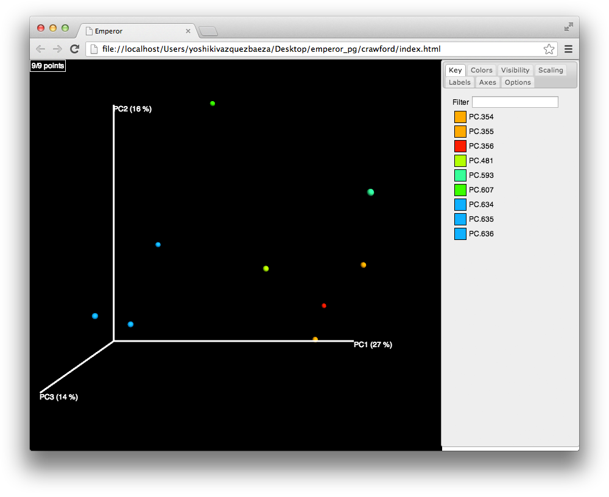

Emperor is an interactive next generation tool for the analysis, visualization and understanding of high throughput microbial ecology datasets.
Due to its tailor-made graphical user interface, delving into a new dataset to elucidate the patterns hidden in the data, has never been easier. Emperor brings a rich set of customizations and modifications that can be integrated into any QIIME or scikit-bio compliant dataset; with lightweight data files and hardware accelerated graphics, constitutes itself as the state of the art for analyzing N-dimensional data using principal coordinates analysis.
If you use Emperor for any published research, please include the following citation:
EMPeror: a tool for visualizing high-throughput microbial community data
Vazquez-Baeza Y, Pirrung M, Gonzalez A, Knight R.
Gigascience. 2013 Nov 26;2(1):16.
You can find the Emperor paper here.
To visualize the taxa driving the differences in a PCoA plot we can use biplots.
A jackknifed PCoA plot (with confidence intervals for each sample) helps to assure that our rarefaction selection is not the cause of the clustering patterns we are looking in beta diversity.
Integrating gradient information to our coloring scheme, such as pH, time, or geographical location can be done in multiple ways with Emperor. One of them, is to add an explicit axis to the plot, from the mapping file.